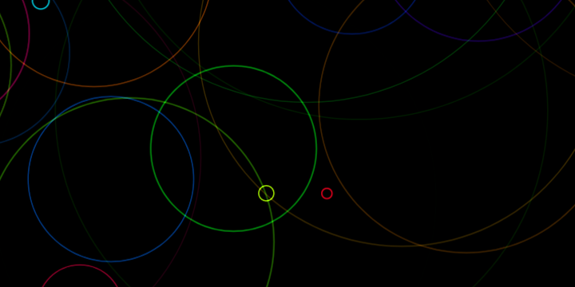
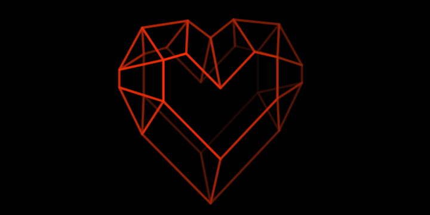
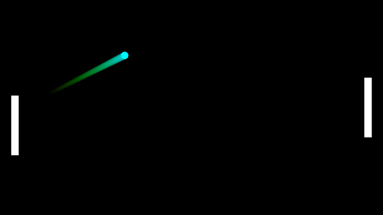
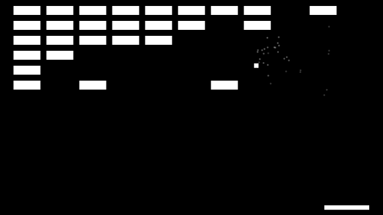
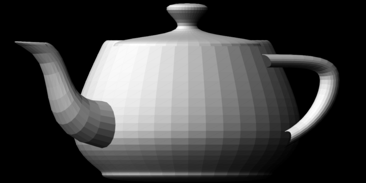
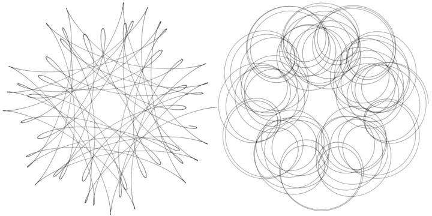

Samuel Degueldre: project hub
p5.js projects
The following projects all make use of the p5.js library, which allows you to get something visual onto the screen quickly, and without having to fiddle around with the intricacies of the HTML5 canvas API.
Color pool
Simple yet relaxing, this projects makes use of offscreen buffers and blending modes.
Orthogonal 3D lattice renderer
This project simply draws a 3D model lattice using orthogonal projection. I implemented simple non-matrix math for rotation and projection, the depth effect is achieved using blending modes.
Pong
A simple pong clone with fancy colors, the ball bounces increasingly fast for more difficulty, and there is a very simple "AI" (one paddle can be controlled by the computer).
Brick breaker
An ultra-simple brick breaker with cool particle effects on collision.
Orthogonal software renderer
This one renders full faces and has basic lighting, at the moment it doesn't have a zBuffer so faces are drawn in the order they're written in the obj file. This one implements basic vector and matrix math for rotations, projections and lighting calulations.
Spirograph
A simple super simple spirograph.
